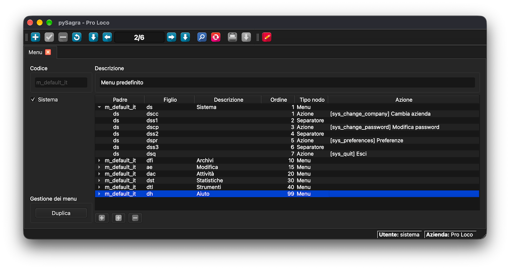

Questa scheda permette di creare, modificare e cancellare i menu della finestra principale. Ogni menu è una struttura ad albero dove ogni voce può essere un:
L'Azione richiama la gestione di un archivio o una finestra del programma. Sottomenu e Separatori consentono di modificare la struttura e l'aspetto del menu.
A ogni utente, per ogni azienda, si assegna un menu nel momento in cui accede al programma o cambia azienda.

Impostzioni dell'anagrafica dei menu:
Un sottomenu può essere usato da più menu, e una modifica vale per tutti quelli che lo usano. I sottomenu usati anche da un menu di sistema sono in sola lettura: per cambiarli se ne crea uno nuovo, con un altro codice.
Con il menu contestuale dell'albero si salvano larghezza, posizione e visibilità delle colonne.
Poichè non è possibile modificare un menu di sistema si può farne una copia con Duplica e quindi modificare il nuovo menu.